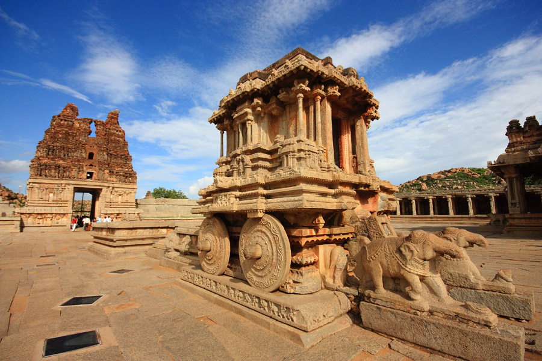
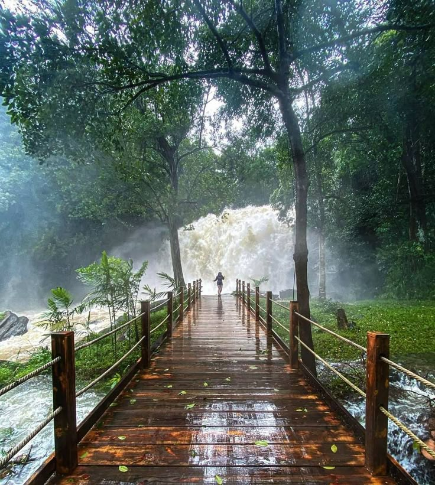
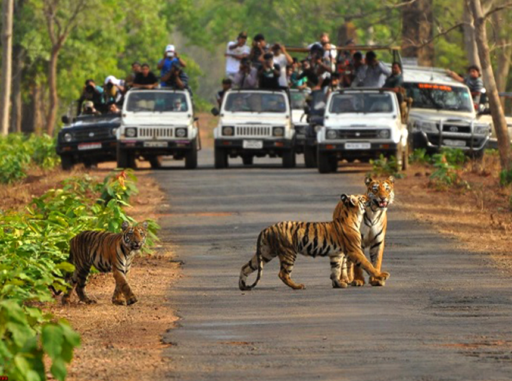
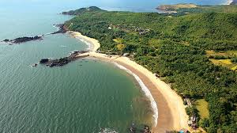

Top Places to Visit in Karnataka

Mysore Palace
A stunning royal residence famous for its Indo-Saracenic architecture and dazzling illumination at night.

Hampi
A UNESCO World Heritage Site filled with captivating ruins of the Vijayanagara Empire, temples, and monuments.

Coorg (Kodagu)
Known as the Scotland of India, Coorg is famous for its coffee plantations, greenery, and serene hills.

Bandipur National Park
A haven for wildlife enthusiasts, home to tigers, elephants, and rich biodiversity.

Gokarna
A peaceful beach town offering pristine shores, temples, and a relaxed atmosphere away from city life.